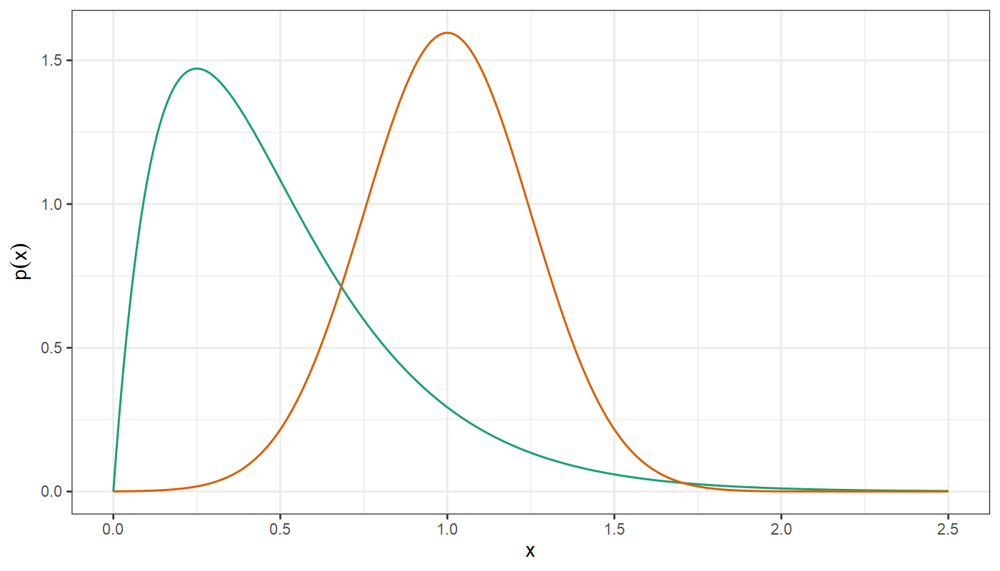
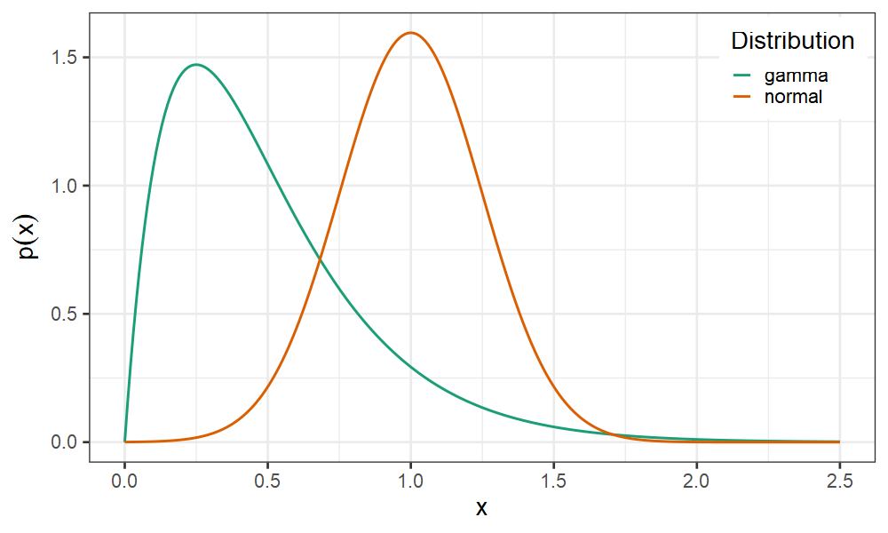
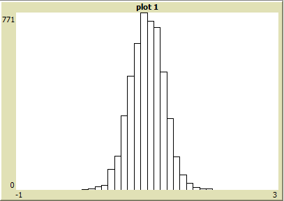
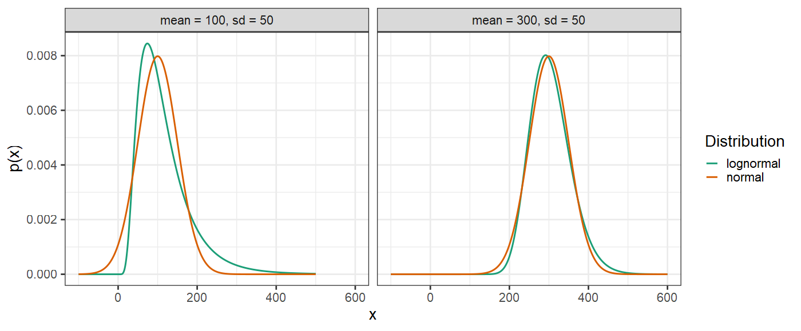
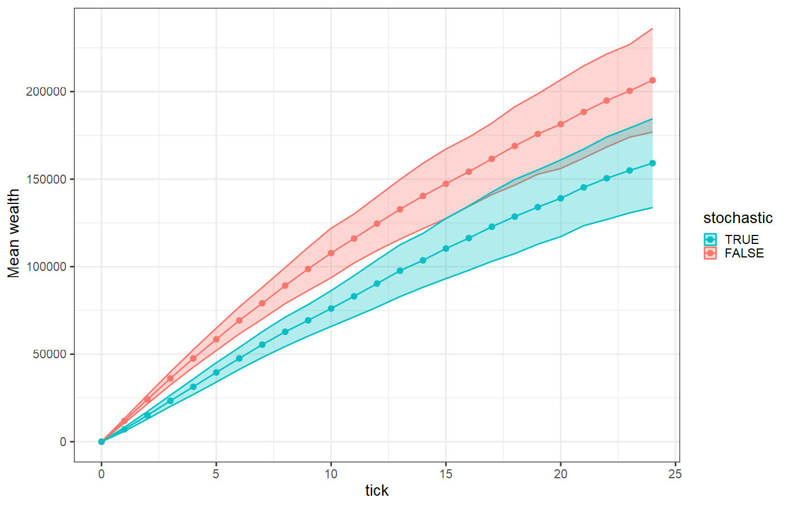

EES 4760/5760
Agent-Based and Individual-Based Computational Modeling
J. Magnolia Gilligan
Class #18: Thursday, October 29, 2026
On “downloads”
page, go to
“18.
Stochasticity: Stochastic Business Investor Model”
https://ees4760.jmgilligan.org/models/class_18/class_18_models.zip
We want to represent some kind of variability but
We do not know the details of what causes the variability
ask patches [set profit 1000 + (random 1000)]
ask turtles [ if random-float 1.0 < mortality-prob [die] ]We know what causes the variability
But calculating it in our model would be too complex, slow, etc.
ifelse random-float 1.0 < prob-rain
[ set rains-today true]
[ set rains-today false]Create heterogeneity among agents or patches:
set fish-length random-normal 50 10Pick a random number from a normal distribution with mean 50 and standard deviation 10
Create heterogeneity in agent behavior:
ifelse random-float 1.0 < q
[ uphill elevation ]
[ move-to one-of neighbors ]instead of a detailed submodel that determines exactly when each dog will die,
let dogs die at random with a 20% probability of dying each tick.
if random-float 1.0 < 0.20 [ die ]
In simulation programming, an algorithm that produces (pseudo)random numbers that fit a particular statistical distribution.
let x1 random-normal 1.0 0.25
let x2 random-gamma 2.0 4.0
random-gamma,
random-exponential
mean = average valuetrue or false):
random-float 1.0 < p
true with probability p
random-bernoulli reporter on p. 206 of the
textbook.random-seed number
As long as number is the same, you get the same sequence of random numbers
to setup
clear-all
random-seed 12345
...
endEvery time you run the model, it does exactly the same thing.
with-local-randomness [ commands ]
Runs without
changing sequence of random numbers in other parts of the model.
to setup
with-local-randomness
[
random-seed 565656
...
]
endExamples:
Histograms
to plot-histogram-normal
clear-all
set-plot-pen-mode 1 ; bar mode
set-plot-pen-interval 0.1
set-plot-x-range -1 3
let x (list)
; fill x with 5000 random numbers from a normal distribution
repeat 5000 [ set x fput (random-normal 1.0 0.25) x]
histogram x
end
random n gives an integer \(i\): \(0 \le i
< n\)
random-float z gives a number \(x\): \(0 \le x
< z\)
Should we worry that \(x < z\) ?
to test
let num_draws 10000
let max-rand 0
repeat num_draws
[
let x random-float 1000
if x > max-rand [ set max-rand x ]
]
show max-rand
endobserver> test
observer: 999.9869678378017On every turn a random number of agents turn red,
with an
average of 5% of agents
ask n-of (random-poisson (0.05 * count turtles)) turtles
[set color red] or
let red-count random-poisson (0.05 * count turtles)
ask n-of red-count turtles [set color red]For measurable things with an average value
set weight random-normal 150 20 ; weight in pounds
set height random-normal 70 2 ; height in inchesBe careful of outliers. There is no limit, so there is a small probability of getting a very large value or a negative value.
repeat 5000 [
let x random-normal 30 10
if x < 0 [ print precision x 2]
]Output:
-1.75
-1.6
-1.08
-6.66
-5.89
-10.87
-0.17If you want something like a normal distribution, but where the result must be positive, try a lognormal distribution:
to-report random-lognormal [ m s ]
let mm ln m
let ss (ln ((m + s) / (m - s))) / 2
report exp (random-normal mm ss)
end
Model: business_investor_class_18.nlogox
Investors move to neighbor with highest expected utility (including own patch)
Average over 10,000 runs:
| Alternative | Frequency |
|---|---|
| Higher profit, lower risk | 78.0% |
| Higher profit, higher risk | 9.3% |
| Lower profit, lower risk | 3.4% |
| Lower profit, higher risk | 0.0% |
| Don’t move | 92.1% |
Mean wealth = $212,434
Total wealth = $5,310,861
| Alternative | Frequency |
|---|---|
| Higher profit, lower risk | 78.0% |
| Higher profit, higher risk | 9.3% |
| Lower profit, lower risk | 3.4% |
| Lower profit, higher risk | 0.0% |
| Don’t move | 92.1% |
